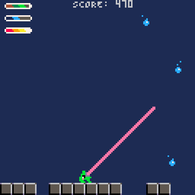
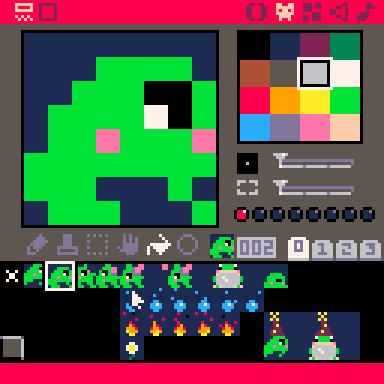
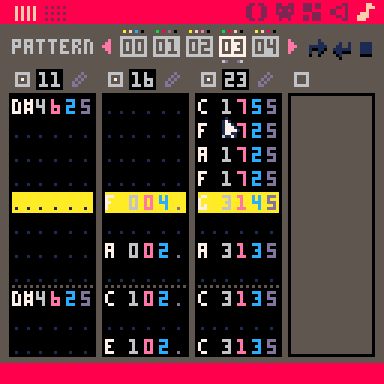

FROPPY
Project Description
Froppy is a shoot'em-up style game that I am making entirely on my own using PICO-8. My goal in making this project is to challenge myself to make a game with the constraints of the PICO-8 system. The constraints are as follows:
- 128x128 pixels
- 16 colors
- 8192 tokens of code
- 256 8x8 sprites
- 4 channels of sound
Because of these constraints, I had to focus on smart game design, creativity, and efficient code. I chose to make a simple game that would be fun to play within these limitations. Eventually, I would like to make a more complex version of this game with increasing difficulty and roguelike elements.
Demonstration
You can play Froppy in the game browser below. Use the directional arrows to move and the Z key to stretch your tongue. See how you can use that...
Process
I will now go over a few challenges I encountered while making this project. If you want to see the full code of the game, you can find it on my GitHub repository.
The concept
The original idea was to make a shoot'em-up retro arcade game with roguelike elements. However, I wanted the game to feel unique and challenging. That's why I decided that the player could only shoot diagonally.
From there, I got the idea of making the player character a frog that stretches its tongue to reach enemies. The higher the enemy is when the tongue hits it, the more points it brings to the player. This pushes the player to take more risks to get more points.
In the future, I would like to add special abilities (hence the, for now useless, magic gauges) and power-ups. Once the player has eaten enough enemies of the same type, they would gain a special ability. I would like to force the player to think strategically under pressure. They would need to choose the best synergies between the power-ups in order to survive the exponential increase of falling enemies.

Sprites
I made all the sprites for the game using the PICO-8's built-in sprite editor. My goal was to create an enjoyable visual experience within the PICO-8's constraints. Each sprite being an 8x8 pixel image with only 16 colors, I had to be mindful and creative to represent what I wanted. I used animations to my advantage to make the sprites more expressive and dynamic. The movements help the player understand what the sprite is supposed to be.
It was the first time I had to work with such strict constraints. I believe making all the sprites for this game taught me how to abstract and simplify visual elements to represent complex ideas in a minimalistic way. In the future, I would like to apply these skills to other projects and convey complex ideas in a simple and intuitive way.

SFX and BGM
All the sounds, including the BGM, were made using the PICO-8's built-in sound editor. My goal was to create a cohesive and enjoyable sound experience that would make the game more fun to play. I learned how to use waveforms and effects to create meaningful sounds.
My first challenge was to make the sounds not too repetitive and make them correspond to the game's events. For the tongue extension sound, I created different variations by transposing the notes that composed it on different scales. This kept the same identity of the SFX while adding variety. The higher an enemy is when the tongue hits it, the higher the pitch it produces. This makes it satisfying to hit higher enemies and guides the player to understand how to gain the most points.
I would like to make the BGM evolve with the player's progress eventually. Make it go faster as the game goes on and gets harder, and change the instruments depending on the power-ups that the player owns.
